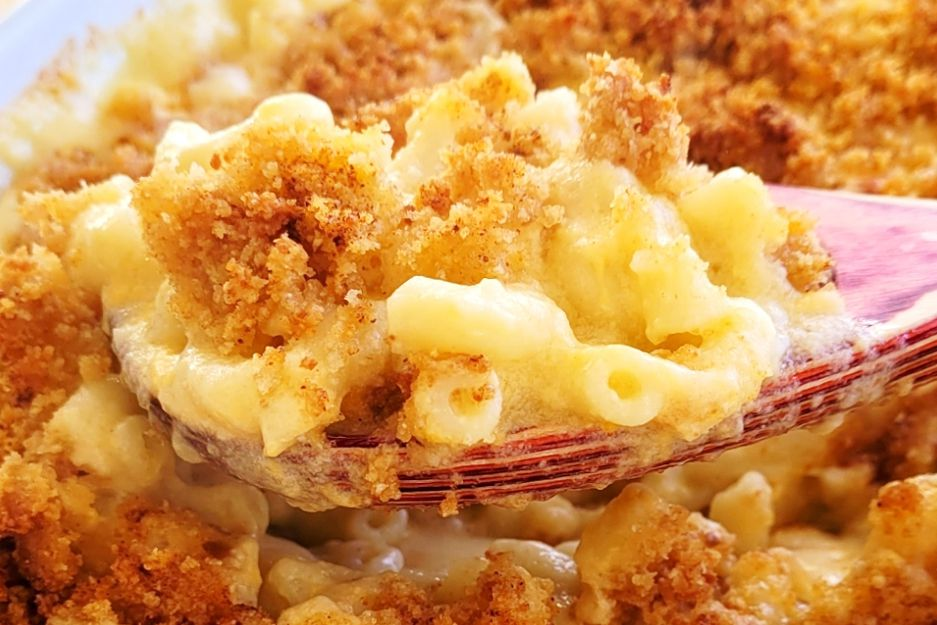

Macaroni and cheese

Description
Macaroni and cheese is a gooey, all-American favorite that can be baked in the oven for a crunchy finish.
Ingredients
- 16 oz elbow macaroni
- 1 tbsp olive oil
- 6 tbsp butter
- 1/3 cup flour
- 3 cups whole milk
- 1 cup heavy cream
- 4 cups sharp cheddar cheese
- 2 cups Gruyere cheese
- 1 cup panko breadcrumbs
- Salt
- Pepper
Steps
- Heat water in a large pot until boiling, then add macaroni and cook until al dente.
- Drain the cooked macaroni and add olive oil to coat pasta.
- Melt butter in a saucepan over medium heatand whisk in flour until cooked.
- Whisk in the milk and heavy cream until smooth.
- Add salt and pepper to taste.
- Add two cups each of the cheddar cheese and Gruyere cheese, then stir until melted.
- Add in cooked past and mix until smooth.
- Pour the macaroni and cheese into an oven-safe baking dish and cover with the rest of the cheese and panko breadcrumbs.
- Bake in the oven at 350F for 30 minutes until golden brown and crunchy.
Return to home